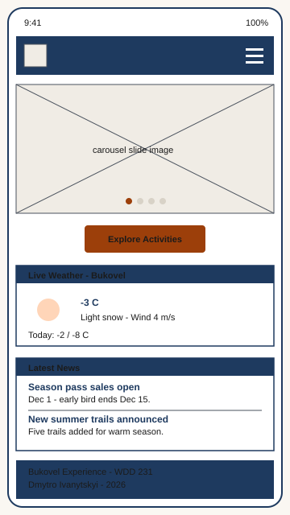
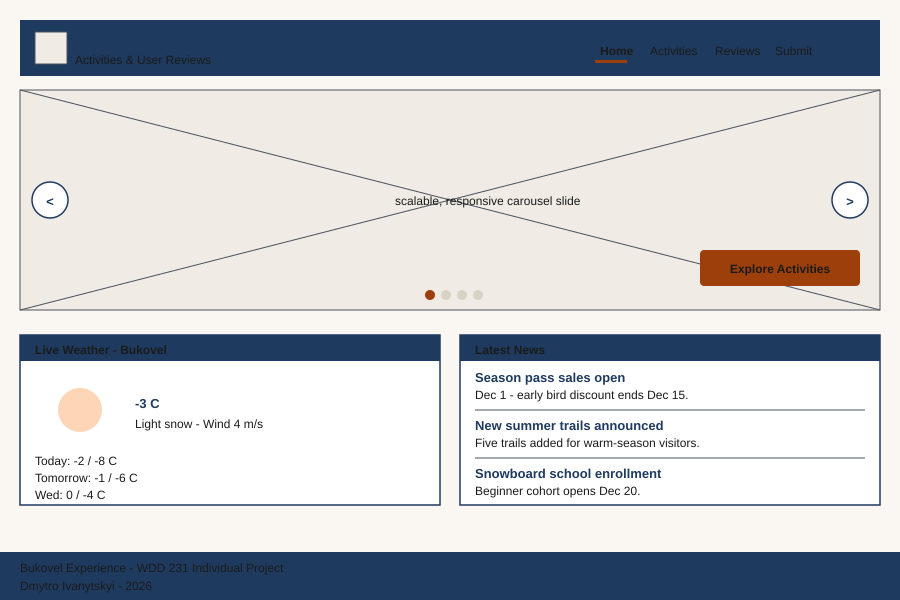

Site Name
Bukovel Experience: Activities Gallery & User Reviews Platform
"Bukovel" is the immediately recognizable name of Ukraine's largest alpine resort, making the site instantly identifiable to anyone searching for the destination. "Experience" frames the content not as a brochure but as a curated story told through both editorial content and real visitor reviews. The subtitle clarifies the two pillars of the site: a gallery of seasonal activities and a community space for traveler reviews.
Site Purpose
The Bukovel Experience site provides a single hub where travelers can discover the seasonal activities available at the Bukovel resort in the Ukrainian Carpathians and read authentic reviews submitted by previous visitors. Users can filter activities by season (winter or summer), open detailed information in interactive modals, sort and like community reviews, and submit their own experiences through a moderated form. The site is intended to serve both winter sports enthusiasts and warm-season travelers planning a trip to Bukovel.
Scenarios
Representative questions from the target audience that drive the content strategy of the site:
- "I am planning my first winter trip to Bukovel - which slopes and activities are appropriate for snowboarding beginners, and what equipment rental options are typically available?"
- "I want to visit the Carpathians in July - what do recent visitors say about hiking trails, mountain lakes, and the overall experience of Bukovel during the warm season?"
- "I just returned from a Bukovel trip and want to share my experience - how do I submit a review that future travelers can sort and like along with the existing community reviews?"
Color Scheme
The palette draws on the natural visual identity of the Ukrainian Carpathians: a deep evening sky over the slopes, the warm auburn of autumn forests, and the fresh snow that defines the winter season.
Alpine Navy
#1e3a5f
Page header, footer, primary headings (h1, h2), navigation background
Carpathian Auburn
#9c3f0a
Calls to action, hyperlinks, active navigation states, accent borders
Snow
#faf7f2
Page background, light surfaces
Charcoal
#1a1a1a
Body text, primary readable content
Gray-Blue
#4a525e
Secondary text, captions, metadata
All foreground/background pairings on this document and across the final project meet WCAG AAA contrast (7:1 minimum for normal text).
Typography
Two complementary Google Fonts are used across the document and the final project to balance personality with readability.
Headings
Discover Bukovel This Season
Oswald (weight 600) - a slightly condensed, athletic sans-serif used for h1, h2, and h3. Evokes mountain signage and sport posters.
Body
Browse 15+ seasonal activities, filter by winter or summer, read what fellow travelers thought about each trail and slope, and contribute your own review when you return.
Source Sans 3 (weight 400 regular, 600 semibold, 700 bold) - a modern, highly legible sans-serif used for body text, labels, navigation, and UI elements.
Wireframes
Low-fidelity layout sketches for the Home page in mobile and desktop views. Color and typography choices defined above are applied consistently across all four planned pages.
Mobile (320 - 639 px)

Desktop (960 px and wider)

Planned Pages
- Home (index.html) - Hero with custom CSS/JS photo carousel, live Bukovel weather via external API, recent news section, calls to action leading to Activities and Submit Review.
- Activities Gallery (activities.html) - Dynamic grid of 15+ activities loaded from a local JSON file. Users filter by season (Winter / Summer / All) using array filter. Clicking a card opens a modal dialog with the full description and a larger image.
- Reviews (reviews.html) - List of community reviews merged from a default JSON file and user submissions stored in LocalStorage. Sortable by newest or most-liked using array sort. Each review has a "Like" button that persists to LocalStorage.
- Submit Review (submit.html) - HTML form for writing a new review. On submit, the new review is saved to LocalStorage and the user is redirected to a thank-you action page that displays their submission.